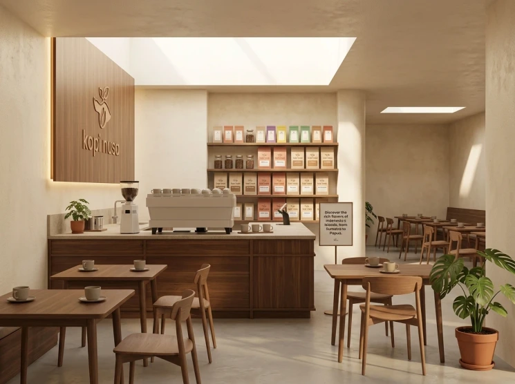
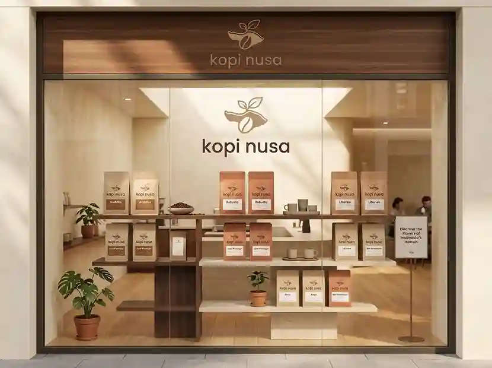
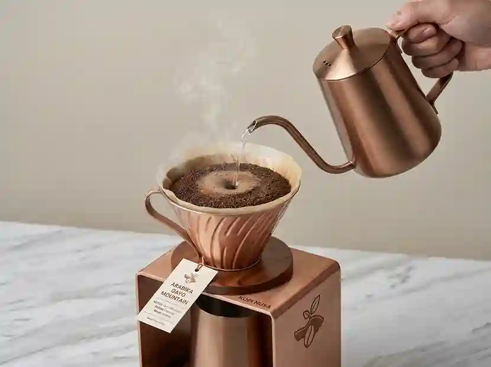

Dokumentasi Kami
Galeri Kopi Nusa
Dokumentasi produk dan aktivitas seduh di kedai, mulai dari etalase hingga proses penyajian.

Profil Kopi Nusa


Instrumen Tenang By. Kopi Nusa
Audio instrumen tenang untuk mendukung pengalaman menikmati kopi.